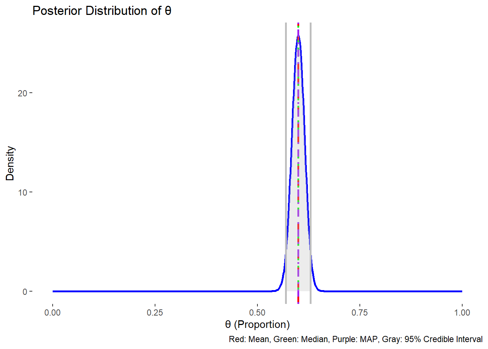

3 Chaotics: Prior and Posterior
3.1 Learning
- Outcomes
– L02: Demonstrate how to specify and fit simple Bayesian models with appropriate attention to the role of the prior distribution and the data model.
– L04: Demonstrate proficiency in using statistical software packages (R) to specify and fit models, assess model fit, detect and remediate non-convergence, and compare models.
- Objectives
By the end of this week you should be able to:
– Understand the importance of prior distributions.
– Calculate posterior using Bayesian exact inference.
– Distinguish between different types of Prior distributions
– Formulate examples.
3.2 Prior and Posterior Distributions
Gelman et al. (2013)
\[\begin{align} \text{initial belief} \xrightarrow[]{\text{Bayes rule + data}} \text{new belief} \end{align}\]First, let’s look at some real-world examples of how prior distributions play a crucial role, particularly in health and medical data.
We already got a flavour that prior distributions allow researchers to incorporate existing knowledge or expert opinions into their statistical models, improving the precision of their conclusions. For example, when designing treatments/interventions, prior knowledge helps tailor them to individual patients, enhancing both personalisation and effectiveness.
Imagine historical data shows that a certain drug has a 70% success rate in patients with similar profiles. By using an informative prior distribution, we can incorporate this insight to estimate the likelihood of success for a new patient. If fresh data suggests an 80% effectiveness rate, Bayesian methods refine this estimate, leading to a more balanced probability—say, around 75%. This synthesis of prior knowledge with new evidence results in more reliable conclusions.
Prior information is also invaluable when historical data is limited or when researching new treatments. In such cases, a non-informative prior—such as assuming an initial effectiveness probability of 0.5—can be used, gradually updating as more data becomes available.
3.2.1 Posterior Summary
The posterior distribution is a valid probability distribution obtained through Bayesian inference, representing the updated beliefs about a parameter after incorporating prior knowledge and observed data. While the full posterior distribution provides a comprehensive summary of uncertainty, policymakers often require point estimates to facilitate decision-making. Common Bayesian point estimates include the posterior mean, posterior median, and maximum a posteriori (MAP) estimate. Among these, the posterior mean and median are generally preferred over the MAP estimate because MAP focuses solely on the mode of the posterior density, ignoring the overall distribution’s shape and probability mass. This can lead to misleading inferences, especially when the posterior distribution is skewed or multimodal. Moreover, since MAP is a mode, it may lie far from the regions of high probability mass, making it a less robust estimator compared to the mean or median.
Beyond point estimates, it is also important to quantify uncertainty, which is where credible intervals come into play. A credible interval provides an interval within which the true parameter value is likely to lie with a specified probability (e.g., 95%). Unlike frequentist confidence intervals, credible intervals have a direct probabilistic interpretation: if a 95% credible interval for a parameter is \([a, b]\), we can say there is a 95% probability that the parameter lies within this range, given the observed data and prior information. This makes credible intervals particularly useful for policy decisions, as they provide a natural way to express uncertainty in estimates, allowing decision-makers to weigh risks and benefits accordingly.
Example
Consider a policymaker estimating the proportion of a population that supports a new public health initiative. Suppose they collect survey data from 1,000 people, where 600 respondents express support. A Bayesian approach models this as a binomial likelihood with a Beta prior (a common conjugate prior for proportions). If the prior is \(\text{Beta}(2,2)\), which represents a weak prior belief that the proportion is roughly uniform between 0 and 1, the posterior distribution is updated using the observed data:
\[ \theta | \text{data} \sim \text{Beta}(2 + 600, 2 + 400) = \text{Beta}(602, 402) \]
From this posterior, the policymaker can derive different point estimates:
- Posterior Mean: Given a \(\text{Beta}(a, b)\) distribution, the mean is $ $, which in this case is:
\[ \frac{602}{602 + 402} = 0.60 \]
This suggests that, on average, the Bayesian model estimates 60% of the population supports the initiative.
- Posterior Median: This is the value that splits the posterior probability into two equal halves. For a Beta distribution, the median can be approximated numerically, where we can write the median approximately
\[ \frac{a-1/3}{a+b-2/3} = \frac{602-1/3}{602+402-2/3} \approx 0.6 \] and in this case, it is close to 0.6.
- Maximum a Posteriori (MAP): The MAP estimate is the mode of the Beta distribution, which for \(\text{Beta}(\alpha, \beta)\) is:
\[ \frac{a - 1}{a + b - 2} = \frac{601}{1000} = 0.601 \]
While close to the posterior mean, the MAP estimate can be problematic in other cases, particularly with skewed distributions, since it focuses only on the density’s peak rather than the overall probability mass.
- Credible Interval: To express uncertainty, the policymaker can compute a 95% credible interval, which provides a range where the true proportion likely falls. For the \(\text{Beta}(602, 402)\) distribution, the central 95% credible interval (obtained numerically) is approximately \((0.576, 0.623)\).
This means that, given the data and prior, there is a 95% probability that the true proportion of public support lies between 57.6% and 62.3%. This interval gives a clearer sense of uncertainty than a single point estimate and helps policymakers make informed decisions while considering potential variations in public opinion.
Code
library(ggplot2)
library(dplyr)
library(scales)
a <- 602
b <- 402
theta_vals <- seq(0, 1, length.out = 1000)
posterior_density <- dbeta(theta_vals, a, b)
posterior_mean <- a / (a + b)
posterior_median <- qbeta(0.5, a, b)
posterior_map <- (a - 1) / (a + b - 2)
credible_interval <- qbeta(c(0.025, 0.975), a, b)
posterior_df <- data.frame(theta = theta_vals, density = posterior_density)
ggplot(posterior_df, aes(x = theta, y = density)) +
geom_line(color = "blue", size = 1) +
geom_vline(xintercept = posterior_mean, color = "red", linetype = "dashed", size = 1) +
geom_vline(xintercept = posterior_median, color = "green", linetype = "dotted", size = 1) +
geom_vline(xintercept = posterior_map, color = "purple", linetype = "dotdash", size = 1) +
geom_ribbon(aes(ymin = 0, ymax = density),
data = subset(posterior_df, theta >= credible_interval[1] & theta <= credible_interval[2]),
fill = "gray", alpha = 0.3) +
geom_vline(xintercept = credible_interval[1], color = "gray", linetype = "solid", size = 1) +
geom_vline(xintercept = credible_interval[2], color = "gray", linetype = "solid", size = 1) +
labs(title = "Posterior Distribution of θ",
x = "θ (Proportion)",
y = "Density",
caption = "Red: Mean, Green: Median, Purple: MAP, Gray: 95% Credible Interval") +
theme(panel.grid.major = element_blank(), panel.grid.minor = element_blank(), panel.background = element_blank())
3.2.2 Exact Inference
The exact inference in Bayesian modeling refers to the precise calculation of posteriors. It involves the direct calculation of the posterior distribution by applying Bayes’ theorem considering the given prior distribution and data likelihood.
We have already seen from the Bernoullie distribution example that, choosing a particular type of prior distribution results in a posterior that belongs to the same distribution family. This property that posterior distribution has the same functional form as the prior distribution is called conjugacy. Priors that have this feature are called conjugate priors. In the Bernoulli model example, the conjugate nature of the Beta prior ensures that the posterior distribution remains a Beta distribution, which provides analytical tractability.
Below we present some common pairs of likelihoods and priors related to conjugacy:
| Likelihood | Conjugate Prior | Posterior Distribution |
|---|---|---|
| \(\text{Bernoulli}(\theta)\) | \(\text{Beta}(a, b)\) | \(\text{Beta}(a + y, b + n-y)\) |
| \(\text{Poisson}(\lambda)\) | \(\text{Gamma}(a, b)\) | \(\text{Gamma}(a + y, b + n)\) |
| \(\mathcal{N}(\mu, \sigma^2)\) (Known variance) | \(\mathcal{N}(\mu_0, \sigma_0^2)\) | \(\mathcal{N}(\mu_n, \sigma_n^2)\) |
| \(\mathcal{N}(\mu, \sigma^2)\) (Unknown variance) | Normal-Gamma \((\mu_0, \lambda_0, \alpha, \beta)\) | Normal-Gamma \((\mu_n, \lambda_n, \alpha_n, \beta_n)\) |
The method is computationally feasible only when the models involved are simple or when they allow for analytical solutions. Bayesian exact inference can be challenging with complex models. Furthermore, if we opt to use a non-conjugate prior, the posterior distribution cannot be easily simplified into a common distribution form and derivation of marginal likelihood will be challenging, if we want to.
In this case, to obtain the posterior distribution we need numerical methods or approximations, as analytical solutions are no longer straightforward or feasible. This complexity of the calculations requires the use of advanced computational techniques such as Markov chain Monte Carlo (MCMC) techniques. We will discuss more on the solutions for these types of situations in our next lecture.
3.3 More Insights into Prior Distribution
Understanding the appropriate selection of prior distributions in modeling is crucial. Prior distributions can be categorised as informative, non-informative, weakly informative, or based on expert judgment. This section explores into these various types of prior distributions, examining their applicability and relevance.
3.3.1 Informative Prior Distribution
An informative prior is a type of prior distribution that is based on information that provides significant idea about the parameters being estimated. Since informative priors reflect more certainty, they tend to be more concentrated around a certain value. The informative prior has a strong influence on the posterior distribution, especially when the data is limited or noisy. In cases with substantial data, the posterior may still be mostly driven by the observed data, but the prior will still play a role in shaping the final outcome.
To explain it more, suppose, we want to know the efficacy rate of a certain vaccine in patients with similar profiles. Let’s consider that the efficacy rate of the vaccine range from 70% to 90%, which we know from literature. Now from a pilot study we observe 16 successes out of 20 trials, i.e., the efficacy rate is still 80%. Hence, we can easily get the posterior distribution of the efficacy rate from \(\text{Beta}(24, 6)\) distribution, if we consider the prior average success rate of 80%, which is calculated from the range 70% to 90%. Numerically, we can plot the prior and posterior distributions as:
Code
library(ggplot2)
a_prior <- 8
b_prior <- 2
n <- 20
y <- 16
a_post <- a_prior + y
b_post <- b_prior + (n - y)
pr_values <- seq(0, 1, length.out = 1000)
prior <- dbeta(pr_values, a_prior, b_prior)
posterior <- dbeta(pr_values, a_post, b_post)
data <- data.frame(
p = rep(pr_values, 2),
density = c(prior, posterior),
Distribution = rep(c("Prior", "Posterior"), each = length(pr_values))
)
ggplot(data, aes(x = p, y = density, color = Distribution)) +
geom_line(size = 1.2) +
labs(
title = "Prior [Beta(8,2)], i.e., 80% vs Posterior Distributions [Beta(24,6)]",
x = "Efficacy Rate",
y = "Density",
color = "Distribution"
) +
theme_minimal() +
scale_color_manual(values = c("Prior" = "blue", "Posterior" = "red"))
Code
#
a_prior <- 9
b_prior <- 4
n <- 20
y <- 16
a_post <- a_prior + y
b_post <- b_prior + (n - y)
pr_values <- seq(0, 1, length.out = 1000)
prior <- dbeta(pr_values, a_prior, b_prior)
posterior <- dbeta(pr_values, a_post, b_post)
data <- data.frame(
p = rep(pr_values, 2),
density = c(prior, posterior),
Distribution = rep(c("Prior", "Posterior"), each = length(pr_values))
)
ggplot(data, aes(x = p, y = density, color = Distribution)) +
geom_line(size = 1.2) +
labs(
title = "Prior [Beta(9,4)], i.e., 70% vs Posterior Distributions [Beta(25,8)]",
x = "Efficacy Rate",
y = "Density",
color = "Distribution"
) +
theme_minimal() +
scale_color_manual(values = c("Prior" = "blue", "Posterior" = "red"))
Code
#
a_prior <- 10
b_prior <- 1
n <- 20
y <- 16
a_post <- a_prior + y
b_post <- b_prior + (n - y)
pr_values <- seq(0, 1, length.out = 1000)
prior <- dbeta(pr_values, a_prior, b_prior)
posterior <- dbeta(pr_values, a_post, b_post)
data <- data.frame(
p = rep(pr_values, 2),
density = c(prior, posterior),
Distribution = rep(c("Prior", "Posterior"), each = length(pr_values))
)
ggplot(data, aes(x = p, y = density, color = Distribution)) +
geom_line(size = 1.2) +
labs(
title = "Prior [Beta(10,1)], i.e., 90% vs Posterior Distributions [Beta(26,5)]",
x = "Efficacy Rate",
y = "Density",
color = "Distribution"
) +
theme_minimal() +
scale_color_manual(values = c("Prior" = "blue", "Posterior" = "red"))
The informative prior in this example allows you to start with a reasonable expectation (from historical data) and update it with observed results. This is especially useful when the sample size is small or the observed data alone might not be robust enough to guide decision-making.
3.3.2 Non-informative Prior Distribution
A non-informative prior (also known as an uninformative prior or objective prior) is a type of prior distribution used in Bayesian statistics that is intended to have minimal influence on the posterior distribution. It reflects a lack of specific prior knowledge about the parameter of interest, allowing the data to drive the inference as much as possible.
Non-informative priors are often used when the goal is to let the observed data dominate the analysis. These are useful in cases where objectivity is critical or where prior knowledge is genuinely unavailable, but they may not always be appropriate when prior information exists.
Non-informative priors often reflect a high degree of uncertainty about the parameter’s value, and might end up with parameter estimates similar to the estimates obtained from frequentist approach.
Before going into details, let’s explain some prior distribution concepts:
Improper Priors: Prior distributions that do not integrate to 1 and therefore are not valid probability distributions but can still be useful for inference if they lead to proper posterior distributions. For instance, \(p(\theta) \propto 1/\theta\) for scale parameters.
Flat Priors: Priors that are constant over the range of the parameter (often used for parameters with bounded support).
Now, we will discuss some common approaches to defining non-informative priors:
- Uniform Priors:
Uniform priors assign equal probability across all possible values of a parameter, assuming no preference for any particular value (e.g., \(p(\theta) \propto 1\), where for a probability parameter \(\theta\) in a Bernoulli model, a uniform prior on \(\text{Unif}[0, 1]\) implies no prior belief about the likelihood of success. From the plot below we cannot visualize the likelihood function (scaled), as the posterior distribution and likelihood functions are same.
Code
library(ggplot2)
set.seed(123)
n <- 100
true_theta <- 0.8
data <- rbinom(n, size = 1, prob = true_theta)
successes <- sum(data)
failures <- n - successes
# Uniform prior: P(theta) ∝ 1 on [0, 1]
# The uniform prior is equivalent to Beta(1, 1).
a_prior <- 1
b_prior <- 1
a_post <- a_prior + successes
b_post <- b_prior + failures
theta_vals <- seq(0, 1, length.out = 1000)
likelihood <- dbinom(successes, size = n, prob = theta_vals)
theta_vals <- seq(0, 1, length.out = 1000)
prior_density <- dbeta(theta_vals, a_prior, b_prior)
posterior_density <- dbeta(theta_vals, a_post, b_post)
# likelihood - scaled
likelihood_scaled <- likelihood / max(likelihood) * max(posterior_density)
plot_data <- data.frame(
theta = rep(theta_vals, 3),
density = c(prior_density, posterior_density, likelihood_scaled),
type = rep(c("Prior (Uniform)", "Posterior", "Likelihood (Scaled)"), each = length(theta_vals))
)
ggplot(plot_data, aes(x = theta, y = density, color = type)) +
geom_line(size = 1) +
labs(
title = "Prior, Likelihood, and Posterior Distributions",
x = expression(theta),
y = "Density",
color = "Distribution"
) +
theme_minimal() +
scale_color_manual(values = c("green","red","blue"))
- Jeffreys’ Priors:
Jeffreys’ prior is a non-informative prior derived based on the Fisher information matrix, ensuring invariance under reparameterisation. This prior is proportional to the square root of the determinant of the Fisher information: \(p(\theta) \propto \sqrt{|I(\theta)|}\), where \(I(\theta)\) is the Fisher information.
Jeffreys’ prior is invariant under reparameterisation means that if you change the parameterization of a model (i.e., if you make a transformation of the parameters), the form of the Jeffreys’ prior does not change.
Binomial distribution
Let us now explain this using Binomial distribution, where we observe 16 successes out of 20 trials, i.e., the efficacy rate is 80% observed from a pilot survey.
Now, we write the Fisher information matrix as: \(I(\theta)=\frac{n}{\theta(1-\theta)}\). Hence, we get Jeffreys prior for \(\theta\) as:
\[ p(\theta) \propto \sqrt{\left| \frac{n}{\theta(1-\theta)}\right|} \propto \frac{1}{\sqrt{\theta(1-\theta)}} \]
where, we can ignore \(\sqrt{n}\) using the proportional sign, as it is free from the model parameter \(\theta\). Hence, we can plot the distributions as:
Code
library(ggplot2)
jeffreys_prior <- function(theta) {
return(1 / sqrt(theta * (1 - theta)))
}
likelihood <- function(theta, k, n) {
return(choose(n, k) * theta^k * (1 - theta)^(n - k))
}
n <- 20
k <- 16
theta_vals <- seq(0.01, 0.99, length.out = 1000)
prior_density <- jeffreys_prior(theta_vals)
likelihood_density <- likelihood(theta_vals, k, n)
posterior_density <- likelihood_density * prior_density
prior_density <- prior_density / sum(prior_density)
likelihood_density <- likelihood_density / sum(likelihood_density)
posterior_density <- posterior_density / sum(posterior_density)
plot_data <- data.frame(
theta = rep(theta_vals, 3),
density = c(prior_density, likelihood_density, posterior_density),
type = rep(c("Prior (Jeffreys)", "Likelihood", "Posterior"), each = length(theta_vals))
)
ggplot(plot_data, aes(x = theta, y = density, color = type)) +
geom_line(size = 1) +
labs(
title = "Jeffreys Prior, Likelihood, and Posterior for Binomial Model",
x = expression(theta),
y = "Scaled Density",
color = "Distribution"
) +
theme_minimal() +
scale_color_manual(values = c("green", "red", "blue"))
Normal Distribution
Let’s consider a normal distribution with known variance \(\sigma^2\). We write the Fisher information for the mean parameter \(\mu\) as \(I(\mu) =\frac{n}{\sigma^2}\), where \(n\) is the sample size. Hence, we write the Jeffreys prior for \(\mu\) as the proportional to the square root of the Fisher information, i.e.,
\[ p(\mu) \propto \sqrt{|I(\mu)|} = \sqrt{\frac{n}{\sigma^2}} \]
Since, \(\sigma^2\) is a constant, hence for the mean of a normal distribution, it’s constant, i.e., Jeffreys prior is \(p(\mu) \propto 1\), and \(-\infty \le \mu \le \infty\).
Thus, the prior is uniform over the parameter space. We write the posterior for \(\mu\) follows normal distribution with mean \(\bar{y}\) (sample mean) and variance \(\sigma^2/n\).
Now let us explain with an eample. Suppose a new antihypertensive drug is tested in a clinical trial, and researchers measure the reduction in systolic blood pressure (in mmHg) among patients. Where, most patients experience a blood pressure reduction of around 5 mmHg, but there is natural variability, which is about 2 standard deviation. Now considering Jeffreys non-informative prior, we can get the posterior distribution of the systolic blood pressure.
Following this we draw the density plots using R code as follows:
Code
library(ggplot2)
set.seed(123)
n <- 100
true_mu <- 5
sigma <- 2
data <- rnorm(n, mean = true_mu, sd = sigma)
# Fisher information for the mean is: I(mu) = n / sigma^2
fisher_info <- n / sigma^2
# Jeffreys prior is proportional to sqrt(I(mu)). For the mean of a normal distribution, it's constant, i.e., uniform over the parameter space
jeffreys_prior <- function(mu) {
return(rep(1, length(mu)))
}
sample_mean <- mean(data)
posterior_mean <- sample_mean
posterior_sd <- sigma / sqrt(n)
likelihood <- function(mu) {
return(dnorm(mu, mean = sample_mean, sd = sigma / sqrt(n)))
}
mu_vals <- seq(true_mu - 3 * sigma, true_mu + 3 * sigma, length.out = 1000)
prior_density <- jeffreys_prior(mu_vals)
likelihood_density <- likelihood(mu_vals)
posterior_density <- dnorm(mu_vals, mean = posterior_mean, sd = posterior_sd)
likelihood_density <- likelihood_density / max(likelihood_density) * max(posterior_density)
plot_data <- data.frame(
mu = rep(mu_vals, 3),
density = c(prior_density, likelihood_density, posterior_density),
type = rep(c("Prior (Jeffreys)", "Likelihood (Scaled)", "Posterior"), each = length(mu_vals))
)
ggplot(plot_data, aes(x = mu, y = density, color = type)) +
geom_line(size = 1) +
labs(
title = "Jeffreys Prior, Likelihood, and Posterior for Normal Model",
x = expression(mu),
y = "Density",
color = "Distribution"
) +
theme_minimal() +
scale_color_manual(values = c("green", "red", "blue"))
Further Notes
Despite being called “non-informative,” their choice can still involve subjective decisions. Some priors, like uniform priors, may appear non-informative in one parameterisation but informative in another (e.g., uniform in \(\theta\) vs. \(\log(\theta)\)).
To explain this, consider a the case where we defined a uniform prior for \(\theta\), i.e., \(p(\theta) = \text{constant}\), implies that all values of \(\theta\) are equally likely. Now, suppose we reparameterise the problem using a new variable, say logit transformation:
\[ \phi = \log \frac{\theta}{1 - \theta} \]
If \(\theta\) follows a \(\text{Unif}[0, 1]\) prior, what does this imply about \(\phi\)? Using the change of variables formula for probability densities:
\[ p(\phi) = p(\theta) \left| \frac{d\theta}{d\phi} \right| \]
Since \(\theta = \frac{e^\phi}{1 + e^\phi}\), its derivative is:
\[ \frac{d\theta}{d\phi} = \frac{e^\phi}{(1 + e^\phi)^2} \]
Substituting this into the density transformation:
\[ p(\phi) \propto \frac{\exp(\phi)}{(1 + \exp(\phi))^2} \]
which is the logistic distribution rather than a uniform distribution. This shows that a uniform prior on \(\theta\) induces a highly structured prior on \(\phi\), meaning that the prior is no longer flat in the transformed space. We will learning more about this in hierarchical modelling.
This concept is crucial in Bayesian statistics, as it shows that non-informative priors are not always truly non-informative; their informativeness depends on the chosen parameter space.
3.3.3 Weakly Informative Prior Distribution
A weakly informative prior distribution in Bayesian statistics is characterised as proper, yet it is designed to provide information that is intentionally less robust than the actual prior knowledge available.
Let’s explain this with the example of efficacy rate of the vaccine. If we consider a \(\text{Beta}(1,1)\) prior for the parameter \(\theta\), then we have already discussed that the prior is a flat line, which represents a non-informative situation. Now, considering a \(\text{Beta}(0.5,0.5)\) prior might lead to a distribution similar to Jefferys’ prior. Whereas, if we consider a \(\text{Beta}(2,2)\) prior, then it favours a middle value (0.5) but still flexible. This prior avoids extreme values (near 0 or 1) unless strongly supported by the data. Below, we can plot all these three different priors.
Code
library(ggplot2)
library(viridis)
theta_vals <- seq(0, 1, length.out = 1000)
beta_1_1 <- dbeta(theta_vals, 1, 1) # Uniform prior
beta_0_5_0_5 <- dbeta(theta_vals, 0.5, 0.5) # Jeffreys' prior
beta_2_2 <- dbeta(theta_vals, 2, 2) # Weakly informative prior
plot_data <- data.frame(
theta = rep(theta_vals, 3),
density = c(beta_1_1, beta_0_5_0_5, beta_2_2),
type = rep(c("Beta(1,1) - Uniform", "Beta(0.5,0.5) - Jeffreys", "Beta(2,2) - Weakly Informative"), each = length(theta_vals))
)
ggplot(plot_data, aes(x = theta, y = density, color = type)) +
geom_line(size = 1) +
labs(title = "Comparison of Different Beta Priors",
x = expression(theta),
y = "Density",
color = "Distribution") +
ylim(0,3) +
theme_minimal() +
scale_color_viridis_d(option = "cvidis")Now assume that the success rate of the vaccine is about 50%, and we can consider the prior distribution as \(\text{Beta}(2,2)\). This symmetric pattern favours the efficacy rate around 0.5 but also allows a wide range of plausible values. Now, suppose 30 trials out of \(n = 50\) shows success. Hence, we get the posterior distribution as \(\text{Beta}(32,22)\). Below you can see the density plots of the distributions.
Code
library(ggplot2)
a_prior <- 2
b_prior <- 2
n <- 50
y <- 30
a_post <- a_prior + y
b_post <- b_prior + (n - y)
p <- seq(0, 1, length.out = 1000)
prior <- dbeta(p, a_prior, b_prior)
# Scaled for visualisation
likelihood <- dbinom(y, n, p) * 100
posterior <- dbeta(p, a_post, b_post)
plot_data <- data.frame(
p = p,
Likelihood = likelihood,
Posterior = posterior,
Prior = prior
)
data_long <- reshape2::melt(plot_data, id = "p", variable.name = "Distribution", value.name = "Density")
ggplot(data_long, aes(x = p, y = Density, color = Distribution)) +
geom_line(size = 1) +
labs(
title = "Prior (weakly informative), Likelihood, and Posterior Distributions",
x = expression(theta),
y = "Density",
color = "Distribution"
) +
theme_minimal() +
scale_color_manual(values = c("green", "red", "blue"))Weakly informative priors are common in modern Bayesian modeling, where it balances interpretability, robustness, and computational efficiency. Even though weakly informative priors are designed to be robust, they still influence the posterior, especially in small-sample scenarios. What counts as weakly informative is context-dependent. For example, a \(\text{Normal}(0,10^2)\) prior on a regression coefficient might be weakly informative in a standard model but too weak in a context where coefficients are typically small. We will explain more about the weakly informative prior when we will learn the Bayesian regression and hierarchical models.
3.4 Summary
Today’s lecture focused on understanding different types of prior distributions and their role in deriving the posterior distribution.
3.5 Live tutorial and discussion
The final learning activity for this week is the live tutorial and discussion. This tutorial is an opportunity for you to to interact with your teachers, ask questions about the course, and learn about biostatistics in practice. You are expected to attend these tutorials when possible for you to do so. For those that cannot attend, the tutorial will be recorded and made available on Canvas. We hope to see you there!
3.6 Tutorial Exercises
Solutions will be provided later after the tutorial.
3.7 Preparation for Week 4
In week 4 you will be required to .